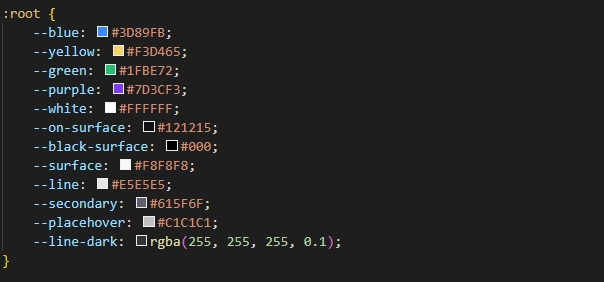
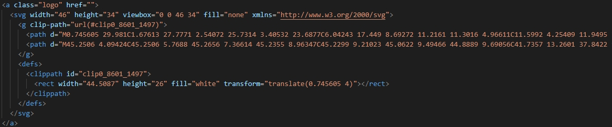
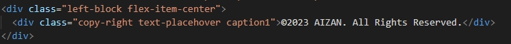

Get started
Item name: Aizan - Artificial Neural Network AI HTML Template
Creator: Long Pham
Owned by: Avitex
Created at: 20/09/2023
Lastest update: 20/09/2023
Thank you for your purchasing this template. If you have any questions that are beyond the scope of this help file, please feel free to email us via hi.avitex@gmail.com
Features
Below are the outstanding functions of this application:
- 15+ Pages
- Fully responsive
- W3C Validated Code
- Clear CSS Table of contents
- Clean Code
- 4 Hompages Variations
- Using Boostrap grid essentially
- Google font include
- Uploads Videos
- View Listing Blogs
- Easy to edit and customize
- Super Clear and Clean Layout
- Speed Optimized
- Cross Browser Support
- Well Documented
- Free Updates
Template Installation
- To install, just unzip the zip file from your downloaded from themeforest.net. Unzip the aizan-html.zip file in this downloaded file and upload the files from this folder on the server.
- You can also view the files offline in your browser on your local server.
- You should see demo version of this theme from its themeforest page.
File Structure
After extracting the folder, the folder structure will look like this:
Documentation
HTML
├── assets ├── css ├── icons ├── images ├── js ├── about.html ├── blog.html ├── ... ├── index.html └── ...
Avaiable pages
Hompages
- Homepage 01: index.html
- Homepage 02: home2.html
- Homepage 03: home3.html
- Homepage 04: home4.html
About
- About: about.html
Contact
- Contact: contact.html
Services
- Services Page 1: service-one.html
- Services Page 2: service-two.html
- Services Page 3: service-three.html
- Services Page 4: service-four.html
- Services Detail: services-detail.html
Blog
- Blog Page 1: blog-one.html
- Blog Page 2: blog-two.html
- Blog Page 3: blog-three.html
- Blog Page 4: blog-four.html
- Blog Page 5: blog-five.html
- Blog Detail: blog-detail.html
Pages
- FAQs: faqs.html
- Pricing: pricing.html
- Page not found: page-not-found.html
- Project Detail: project-detail.html
Fonts
If you want to use other font family you may want to find one on Google Fonts
To choose & change your favourite font family from google font you can follow this instruction
In this app we are using Plus Jakarta Sans font
Source files
CSS files:
//Main font family <link rel="stylesheet" href="https://fonts.googleapis.com/css2?family=Plus+Jakarta+Sans:wght@300;400;500;600;700;800&display=swap"/> //Bootstrap <link rel="stylesheet" href="./assets/css/bootstrap.min.css"/> //Animate.css <link rel="stylesheet" href="./assets/css/animate.min.css"/> //Slick slider <link rel="stylesheet" href="./assets/css/slick.css"/> //SwiperJS <link rel="stylesheet" href="./assets/css/swiper-bundle.min.css"/> //Main icon file <link rel="stylesheet" href="./assets/icons/style.css"/> //Main style file <link rel="stylesheet" href="./assets/css/style.css"/>
Javascript files:
//Jquery <script src="./assets/js/jquery-3.7.0.js"></script> <script src="./assets/js/jquery-migrate-3.4.1.js"></script> //Slick slider <script src="./assets/js/slick.min.js"></script> //Scroll Reveal <script src="./assets/js/scrollreveal.js"></script> //SwiperJS <script src="./assets/js/swiper-bundle.min.js"></script> //Phosphor icon font <script src="./assets/js/phosphor-icon.js"></script> //Count Up <script src="./assets/js/countUp.min.js"></script> //Waypoints <script src="./assets/js/waypoints.min.js"></script> //Bootstrap <script src="./assets/js/bootstrap.bundle.min.js"></script> //Main javascript file <script src="./assets/js/main.min.js"></script>
Color
How to change main color
- Go to path assets/css/style.css
- You can search 'Main color' and find variable :root and edit colors to what color you want 
- Finally, save the changes you've made and you're done.
Customization
How to change logo image ?
You can replace the logo by replacing the svg tag or adding an "img" tag where src is your logo path.
How to change copyright ?
You can search "copy-right" and change copyright by replace text in "div" tag with class "copy-right"
Official Library and Documentation
Here are some of the libraries we use in the app and their official documentation page:
- JQuery (https://jquery.com/)
- Slick Slider (https://kenwheeler.github.io/slick/)
- Animate.css (https://animate.style/)
- Scroll Reveal (https://scrollrevealjs.org/)
- SwiperJS (https://swiperjs.com/)
- Count Up (http://inorganik.github.io/countUp.js/)
- Waypoints (http://imakewebthings.com/waypoints/)
- Bootstrap (https://getbootstrap.com/)
- Phosphor-icons (https://phosphoricons.com/)
Thanks
Thank you for your purchasing this template. If you have any questions that are beyond the scope of this help file, please feel free to email us via hi.avitex@gmail.com
Avitex